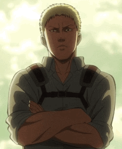

Reiner Braun es uno de los personajes más importantes en Shingeki no Kyojin, conocido por su papel como Guerrero de Marley y poseedor del poder del Titán Acorazado.
Desde una edad temprana, Reiner fue entrenado intensivamente por Marley con la misión de infiltrarse en las murallas y desestabilizar a la humanidad desde dentro.
Este papel lo lleva a vivir una doble vida: por un lado, como un soldado leal a Marley y, por otro, como un compañero y amigo de los miembros del Cuerpo de Exploración,
como Eren Jaeger y sus otros camaradas.
Este dualismo crea un conflicto interno devastador para Reiner, quien se encuentra constantemente dividido entre su deber hacia Marley y sus lazos emocionales con sus
amigos dentro de las murallas. A lo largo de la serie, Reiner enfrenta una carga emocional y psicológica inmensa, experimentando crisis de identidad y momentos de
desesperación profunda. Su lucha por reconciliar estas dos facetas de su vida revela la complejidad de su carácter y la magnitud de su sufrimiento personal.
